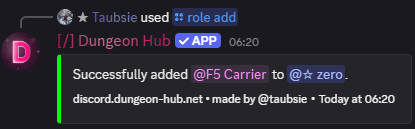
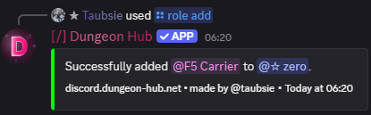

/role add
Arguments
Name | Type | Description | Optional? |
|---|---|---|---|
| User | Target member. | ❌ No |
| Role | Role to assign. | ❌ No |
Examples
/role add user: @user role: @F5 Carrier

See Also
27 December 2025
Name | Type | Description | Optional? |
|---|---|---|---|
| User | Target member. | ❌ No |
| Role | Role to assign. | ❌ No |
